News & Updates
Stay updated with the latest from Capo Lab.
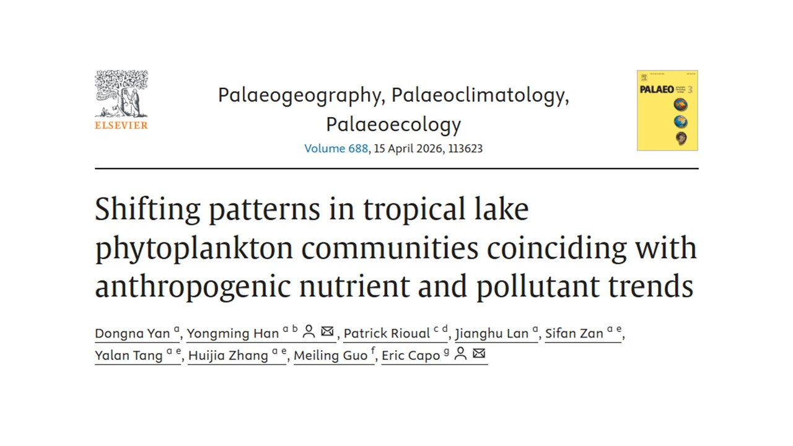
April 2026
New paper from Huguangyan Maar Lake
Dongna and al. reveal phytoplankton shifts over the past 140 years in a maar lake
Read more →
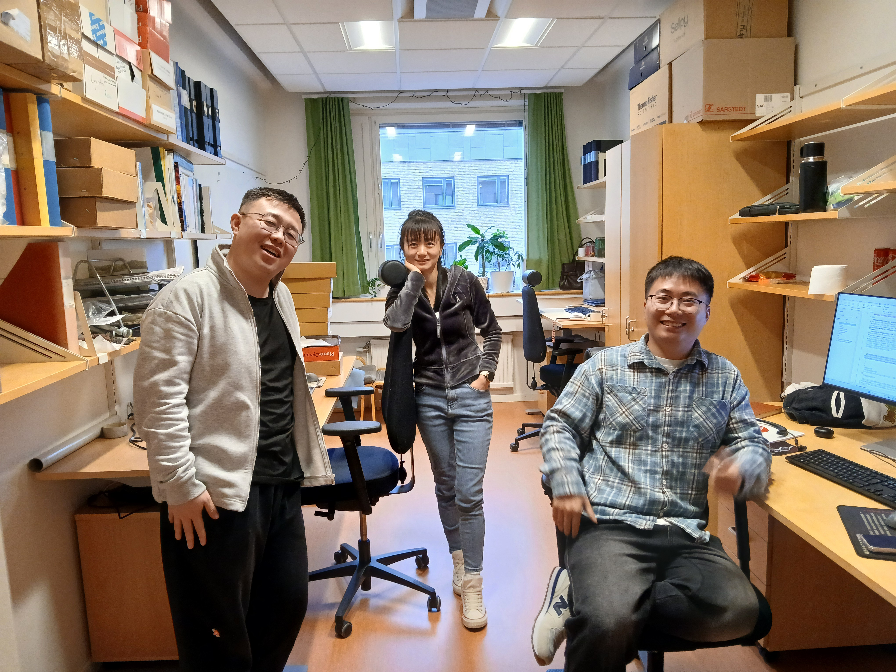
March 2026
Yu joins a post-doc fellow
Yu Zhao is joining as a post-doc researcher to study past changes in Chinese lakes and their catchment
Read more →
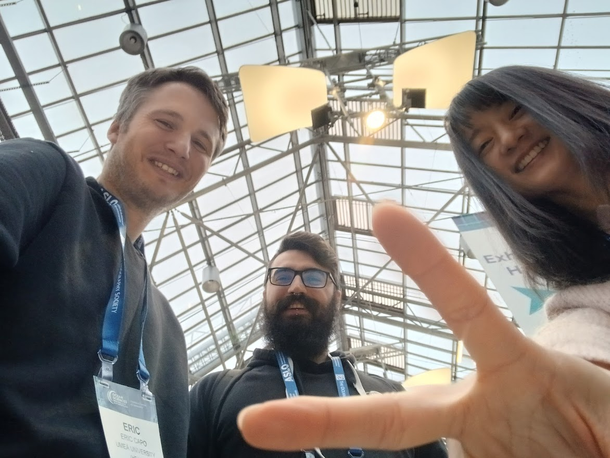
February 2026
Ocean Science Meeting 2026 at Glasgow
Meifang, Coco and Eric goes to OSM2026 to present their research on past deooxygenated coastal systems
Read more →
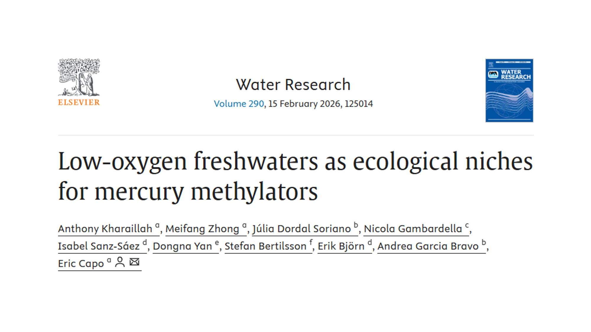
February 2026
Anthony Master´s project is published!
The work showing the presence of mercury methylators in low-oxygen lake waters is published in Water Research
Read more →
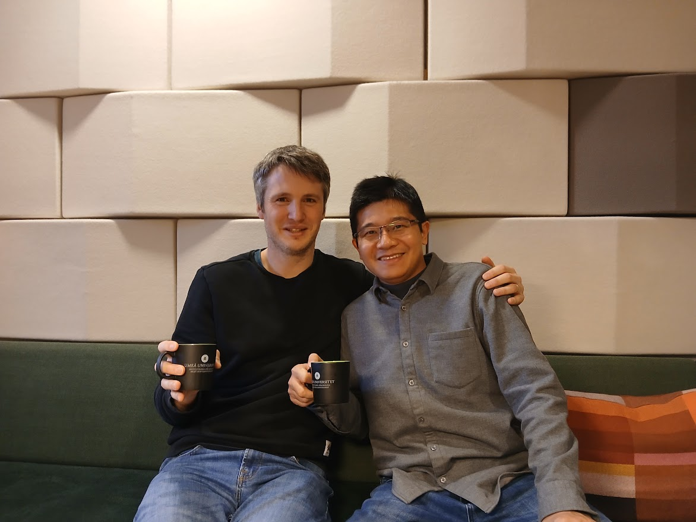
December 2025
Qi visits us
Qi Lin is an Associate Professor at NIGLAS (Nanjing) studying past lake ecosystems
Read more →
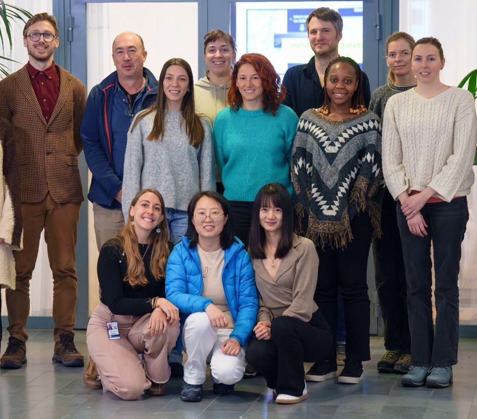
November 2025
Workshop Unmasking mercury detoxifiers
Isa, Nicola and Eric organises a workshop to create an up-to-date merAB database
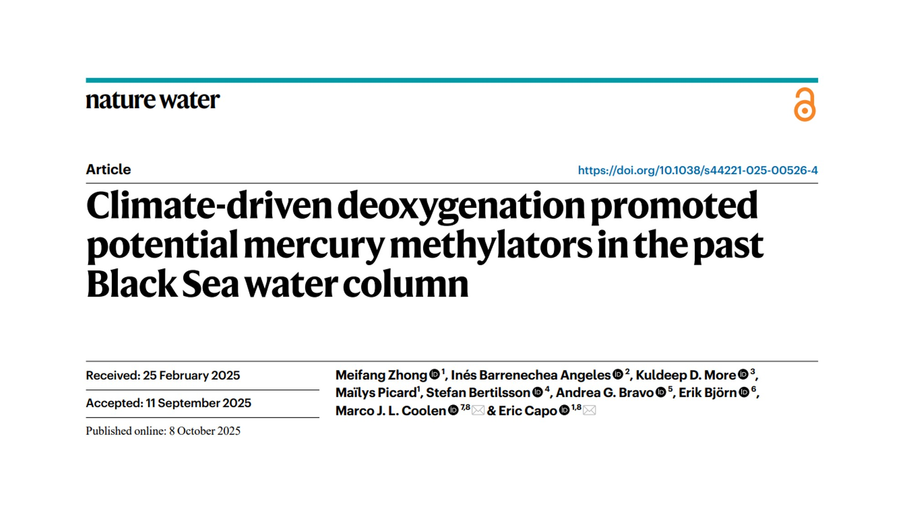
October 2025
Meifang first PhD chapter published
Meifang´s paper showing how past anoxia in the Black Sea shaped the presence of mercury methylators is published in Nature Water
Read more →

October 2025
Yangzheng joins as visiting PhD student
Yangzheng Liu is studying the changes in the Lake Daihai over the past 3000 years
Read more →

September 2025
MicroMates at Forskarfredag
Eric and Meifang shows the card game MicroMates during the Night of Science at Umeå
Read more →

September 2025
Flúvio joins as post-doc
Flúvio is supervised by David Wardle to study microbial activity in lake island soils
Read more →

September 2025
AMRI2025 meeting at Uppsala
Capo lab join the meeting of Swedish aquatic microbial ecologists
Read more →

September 2025
Manuela starts her Master thesis
Manuela Grane is using eDNA samples obtained from the Abisko drone expedition to study fish community diversity in lake ecosystems

September 2025
Anton starts his PhD
Anton Sandström starts his PhD in Per Stenberg´s group using airbone eDNA to study agricultural pathogens
Read more →
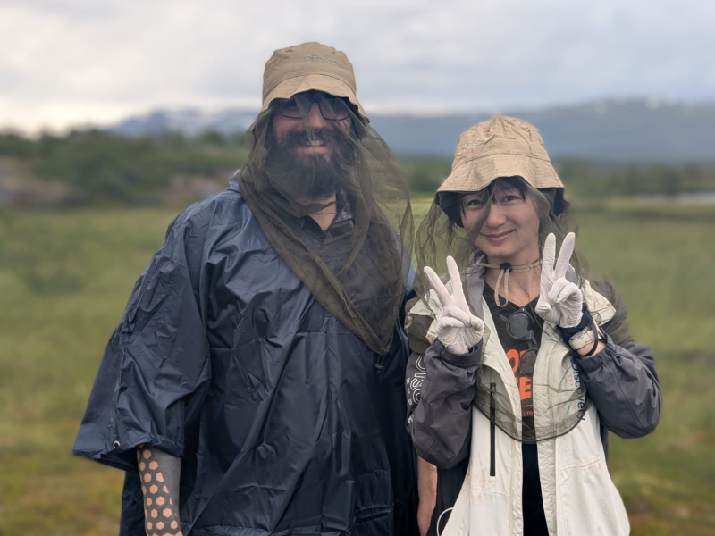
August 2025
ABI25 expedition - Drone float in Abisko
A team led by Meifang sample surface waters with drones from 100 lakes and rivers in 6 days near Abisko
Read more →

July 2025
Bumin joins as Erasmus student
Bumin Kaan Kiraz is joining to take part of the ABI25 drone expedition
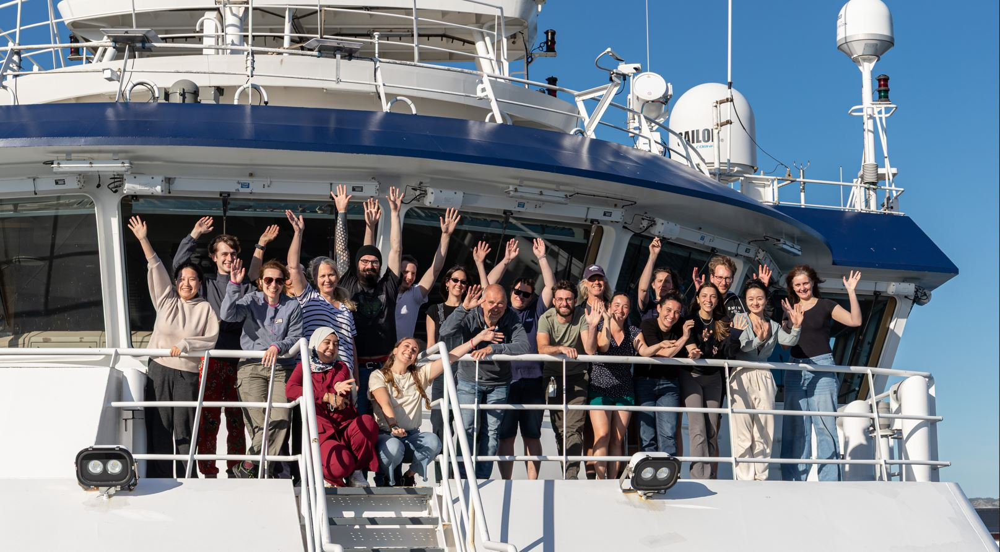
July 2025
SWE25 expedition!
Capo lab settles for the SWE25 expedition to sample water and sediment from fjords located in the Swedish West Coast
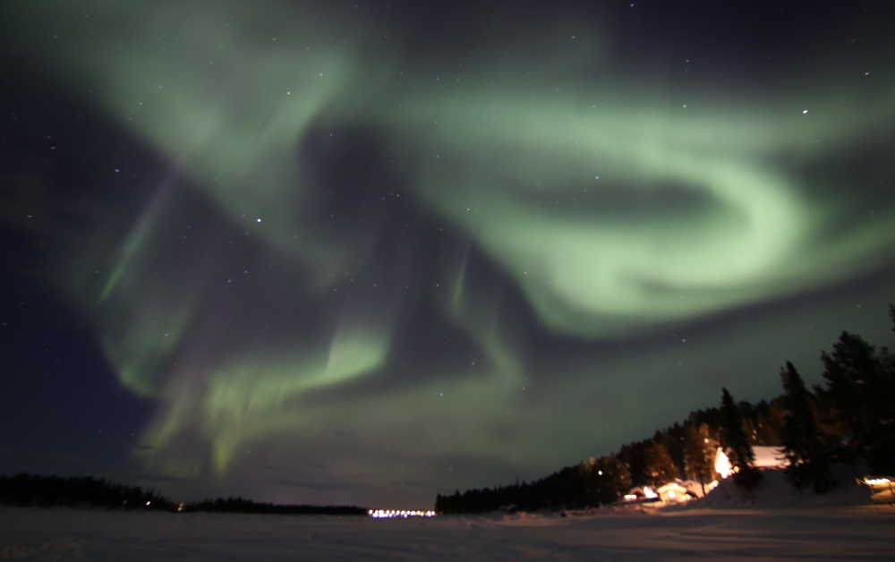
May 2025
Göran Gustafsson research grant
Eric gets a grant to support the Abisko drone expedition
Read more →
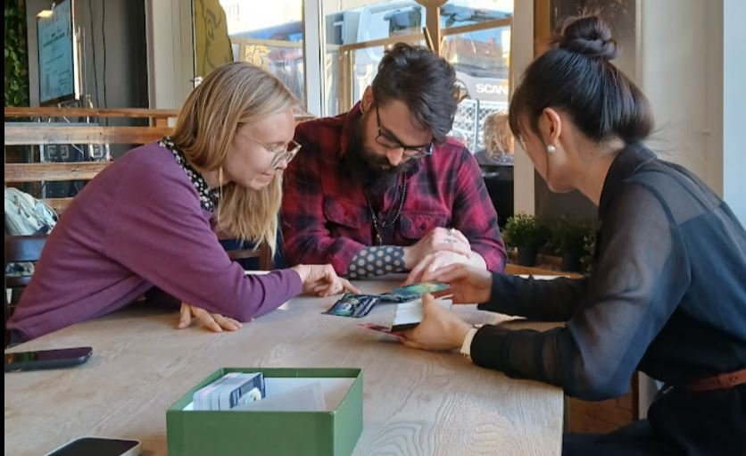
May 2025
Kari joins as visiting PhD student
Karina van der Zon PhD student from the University of Strasbourg is visiting us to assist with drone sampling
Read more →

May 2025
Kempe research grant for Meifang
Meifang gets a Kempe research grant for covering the molecular ecology lab work related to the Abisko drone expedition
Read more →
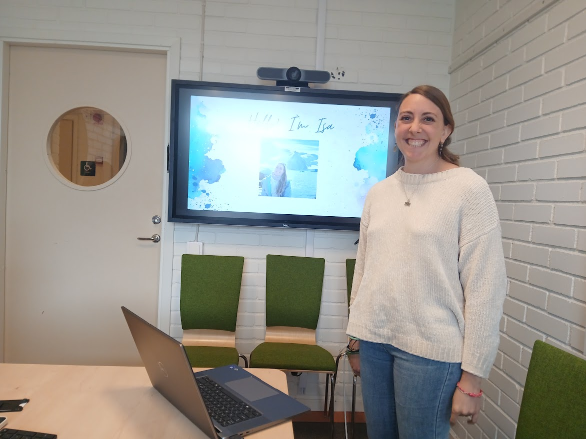
May 2025
Isa is joining the lab
Isabel Sanz-Saéz does her post-doc in Erik Björn group and studies the biogeochemistry and ecology of mercury cycling
Read more →

April 2025
CIRC research grant!
Eric and collaborators get funding to study lake microbial diversity in Swedish Arctic lakes
Read more →
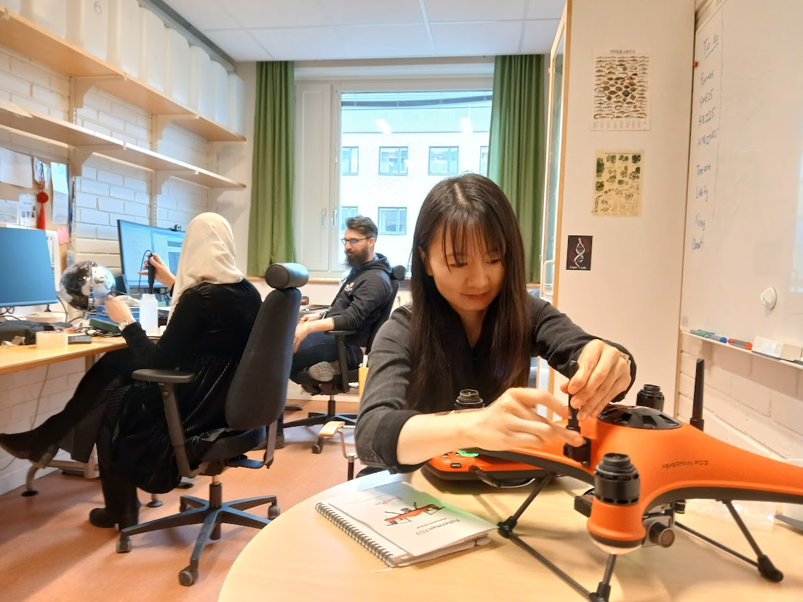
April 2025
First drone tests
We do the first flight tests with drones for environmental DNA analysis
Read more →
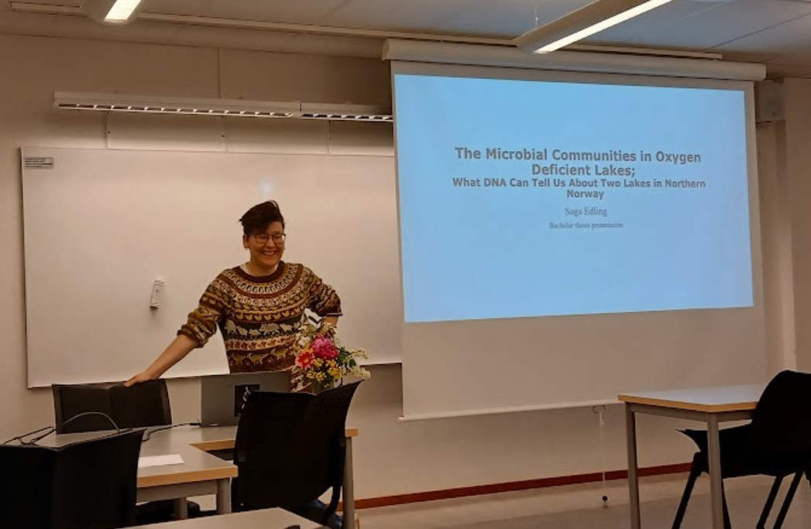
April 2025
Saga does her Bachelor thesis
Saga Edling studies the water bacterial communities of two adjacents lakes from Norway
Read more →

April 2025
Coco joins as Kempe post-doc fellow
Corentin Fournier is combining aquatic microbial ecology and modelling expertise to study past and modern coastal systems
Read more →
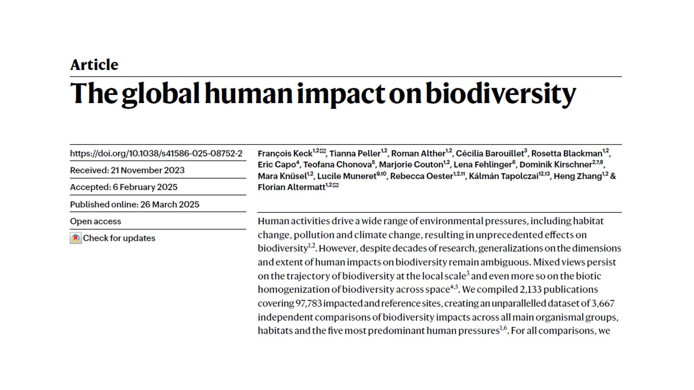
March 2025
Paper in Nature!
Eric is co-author of the paper "The global human impact on biodiversity"
Read more →

January 2025
Kajsa starts her Master thesis
Kajsa Brandström studies the organic matter cycling in the oxygen-deficient waters of the Baltic Sea
Read more →

December 2024
Premiere of Fjord frontiers
We shows the documentary Fjord frontiers, made by Mikimo studio, about our expedition in March 2024
Read more →

December 2024
Ship time granted from SWERVE
A group of Swedish PIs led by Eric gets funding from SWERVE to organize an expedition in Swedish West Coast
Read more →
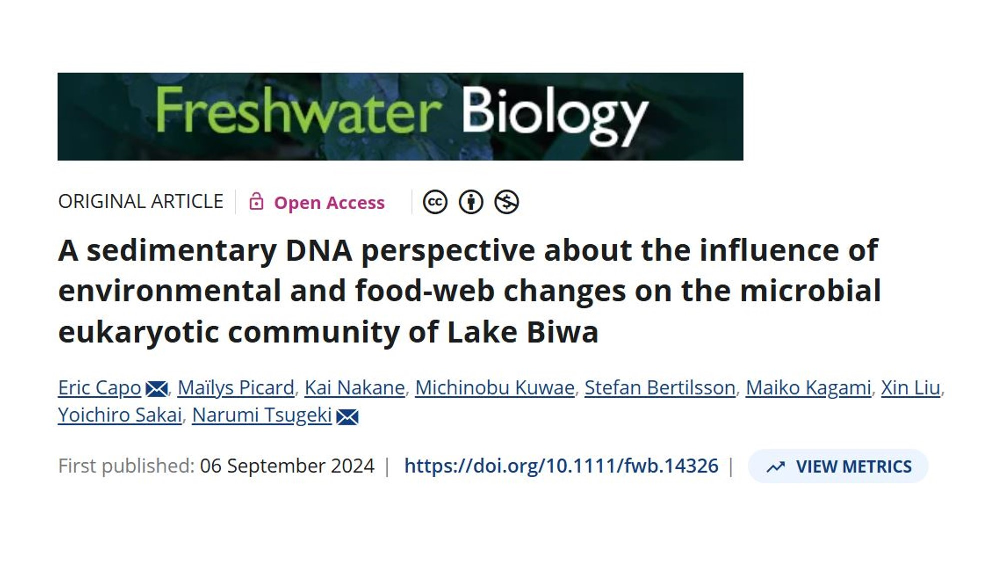
November 2024
Paper published about Lake Biwa
This work in collaboration with Narumi Tsugeki et al. shows the past history of Lake Biwa food webs by using sedimentary DNA
Read more →

October 2024
Marissa joins as visiting PhD student
Marissa Despins is studying mercury cycling in the global ocean using biogeochemistry and environmental genomics
Read more →
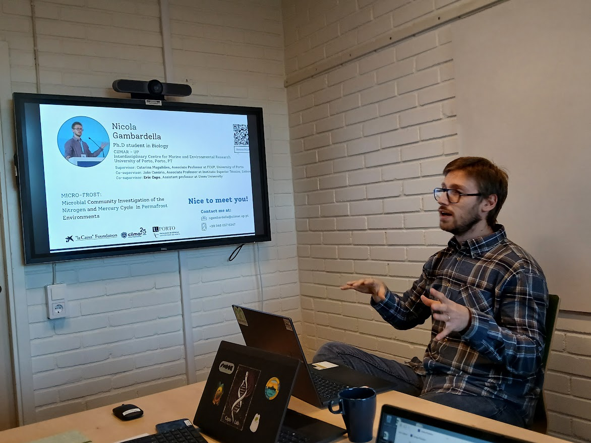
September 2024
Nicola starts his PhD thesis
Nicola Gambardella, PhD student in Catarina Magalhaes at CIIMAR (Porto) studies mercury cycling in permafrost environments
Read more →

September 2024
Anton starts his Master thesis
Anton Sandström studied the vertical distribution of microbial communities in lake sediments
Read more →

June 2024
PhD defense of Fredrik Olajos
Fredrik Olajos defended his PhD thesis "Using environmental DNA to unravel aquatic ecosystem dynamics"
Read more →
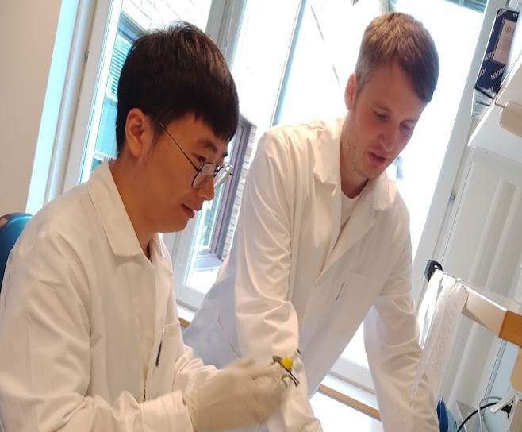
June 2024
Yu visits us
Yu Zhao, PhD student in NIGLAS (Nanjing), visits us to initiate collaboration related to the study of Lake Xiliang"
Read more →

June 2024
Second paper on Sihailongwan Maar Lake
This works shows phytoplankton changes in a maar lake"
Read more →
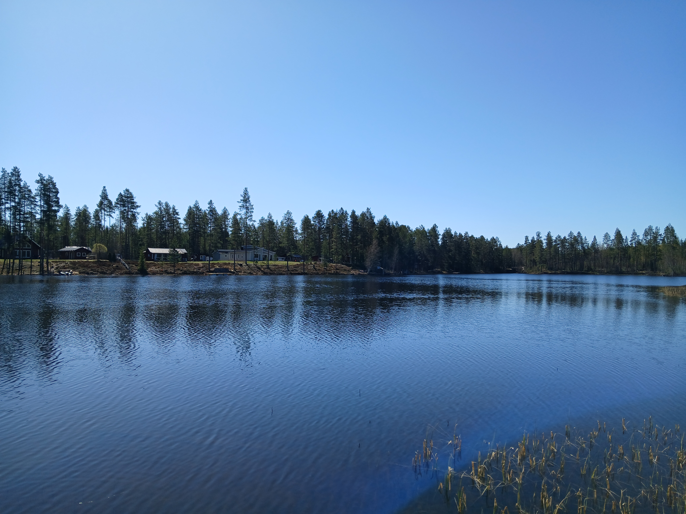
May 2024
Kempe post-doc fellowship granted
Eric gets, together with Eric Libby from Icelab, a post-doc fellowship in environmental paleomicrobiology for inferring community composition and function from metabolic fossils
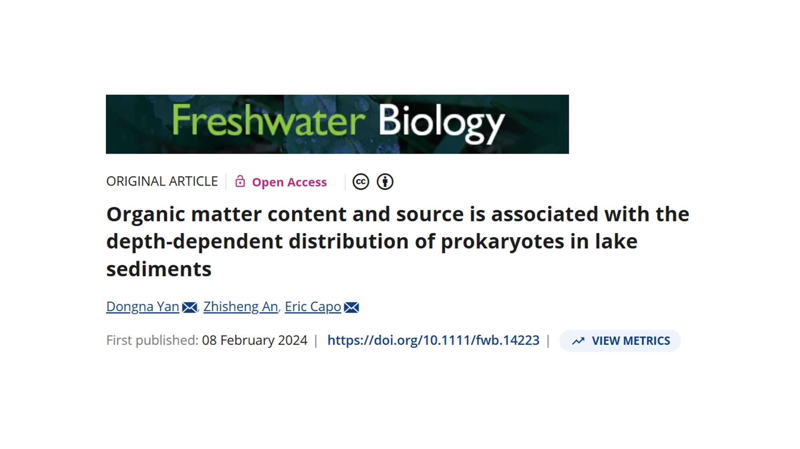
April 2024
New paper about Lake Chenghai
Dongna´s paper shows the links between organic matter and microbial community in lake sediments
Read more →
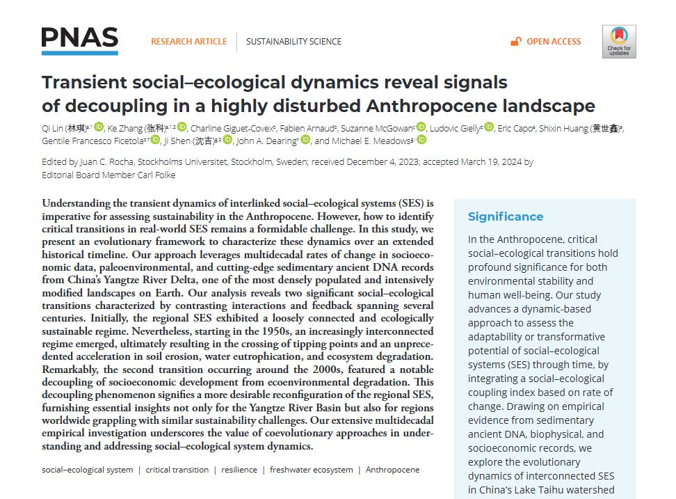
April 2024
New paper in PNAS
Qi published this dataset about Lake Taihu to study the impact of social–ecological dynamics on highly disturbed landscape"
Read more →

March 2024
Baraa joins as Kempe post-doc fellow
Baraa Rehamnia studies past marine and lake ecosystems with sedimentary DNA
Read more →

March 2024
Field work in Norwegian fjords
Capo, Björn and Bravo labs joined forces to sample the water and sediment of Rossfjordvatnet in northern Norway
Read more →
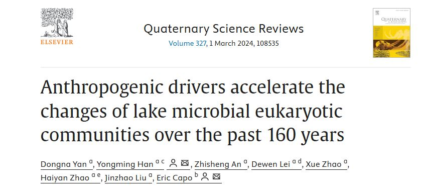
March 2024
New paper about Sihailongwan Maar Lake
This paper from Dongna reveals 160 years long changes in a lake microbial eukaryotic community
Read more →

February 2024
Giota joins as visiting PhD student
Panagiota Xanthopoulou, PhD student at the University of the Aegean (Greece) came to be trained with environmental genomic data analysis for marine biodiversity assessments and invasive species managements in past and modern environments
Read more →

January 2024
Anthony starts his Master thesis
Anthony Kharaillah is doing his Master thesis on the study of mercury methylators in lake ecosystems using water metagenomic data
Read more →
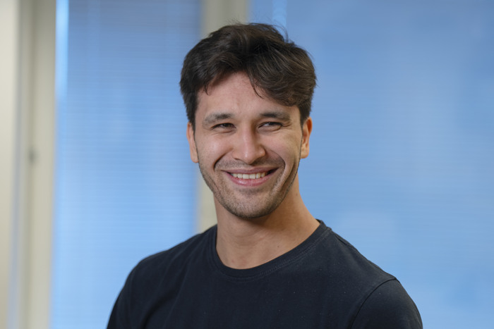
December 2023
Seb is co-supervised by Eric
Sebastien Leveque, PhD student supervised by Nicholas Kamenos, study the relationships between coral and symbionts under bleaching conditions
Read more →
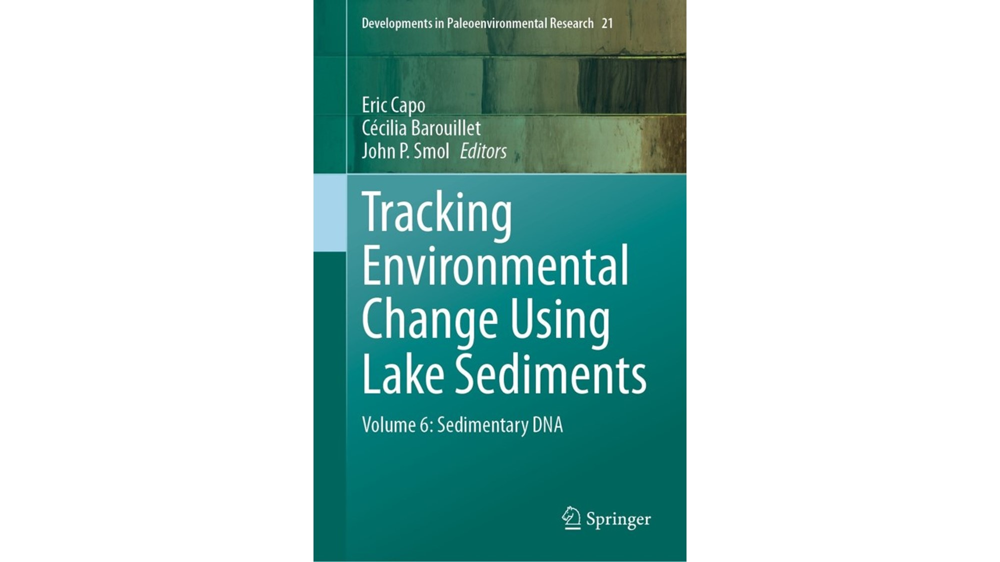
December 2023
Sedimentary DNA Book Published
Eric is the lead editor of the book "Tracking Environmental Change Using Lake Sediments: Volume 6 - Sedimentary DNA" published by Springer Nature
Read more →

December 2023
Meifang starts her PhD
Meifang Zhong join the Capo lab as PhD student to study microbial metabolisms in deoxygenated coastal systems
Read more →

November 2023
New Environmental DNA lab!
Capo lab is establishing an environmental DNA lab at EMG Dpt

October 2023
VR Grant Awarded
Eric secured a VR Starting grant “Gasping for Breath: Exploring the consequences of coastal deoxygenation on microbial processes and ecosystem services“
Read more →
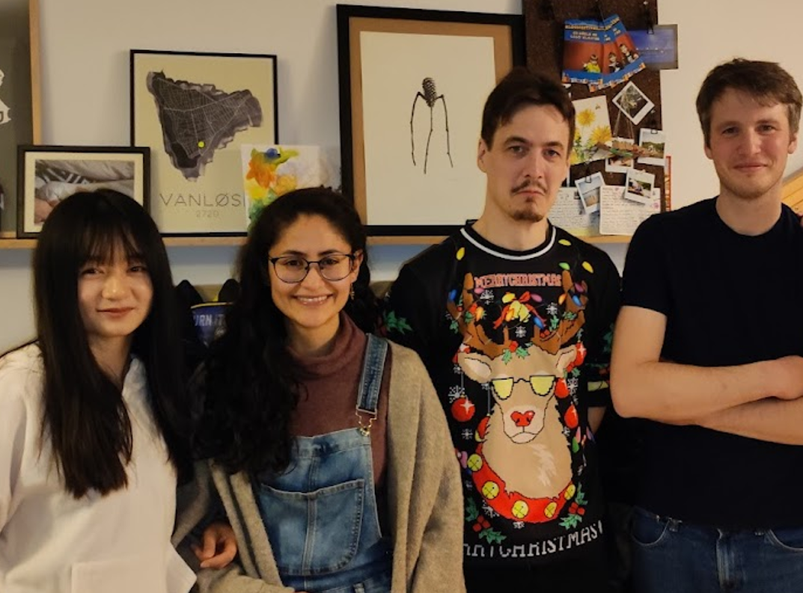
September 2023
Lou starts as a post-doc fellow
Lourdes García-Martínez works in Nicholas Kamenos´s group to study past coral-symbiont relationships using ancient DNA
Read more →

July 2023
New paper about the Black Sea
Eric (co)-first authored a paper in mSystems about mercury methylators in Black Sea water column
Read more →

May 2023
Kempe post-doc fellowship granted
Eric obtains, together with Erik Björn, a Kempe post-doc fellowship to study the effects of the deoxygenation of coastal systems on microbial metabolisms and related services
Read more →

May 2023
The beginning
Eric joins the Department of Ecology and Environmental Sciences at Umeå University as Assistant Professor